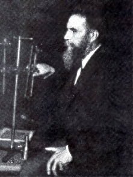

Al igual que en el siglo XIX, en el siglo XX hubo varios hechos cruciales que modelaron el desarrollo de la Traumatología y Cirugía Ortopédica. El descubrimiento de los rayos X, en 1895 y el desarrollo de nuevos materiales, por una parte, y las guerras mundiales, por otra, son los responsables del desarrollo de la Traumatología y Cirugía Ortopédica como ciencias independientes de la cirugía.
El descubrimiento de los rayos X fue tan importante para la Ortopedia que hoy en día no se concibe la una sin los otros. La posibilidad de ver la anatomía del hueso antes (o en lugar) de la cirugía abrió un increíble abanico de posibilidades que los cirujanos de la época se apresuraron a explotar. De hecho, a las pocas semanas del descubrimiento de los rayos X empezaron a usarse en medicina. Wilhelm K. von Röntgen (1845-1923) (figura 26) profesor de física en Wurzburg obtuvo la primera radiografía de la mano de su esposa el 22 de diciembre de 1895. Recibió el Premio Nobel por su descubrimiento en 1901. Su hallazgo no solamente dio origen a una nueva especialidad, el radiodiagnóstico, sino que con respecto a la patología ósea constituye un punto de inflexión que se considera como el origen de la Traumatología y Cirugía Ortopédica tal y como se concibe en la actualidad.
Las contiendas bélicas de la primera mitad del siglo XX debido a su globalidad (1ª y 2ª Guerras Mundiales), así como a su crudeza (Revolución Soviética, Guerra Civil Irlandesa, Guerra Civil Española, etc.) supusieron una gran fuente de lesiones esqueléticas. En concreto, la Primera Guerra Mundial fue uno de los factores más influyentes en la evolución de la ortopedia moderna. Fue la primera guerra en la historia en la que se utilizaron técnicas de asepsia, con el resultado de que un gran número de soldados con graves lesiones ortopédicas sobrevivieron. Estos soldados precisaron, y en muchos casos dieron lugar a la creación de nuevas técnicas, tanto quirúrgicas como de rehabilitación, prótesis, etc. La experiencia obtenida por los traumatólogos y cirujanos ortopédicos ocasionó un gran desarrollo de todas las técnicas diagnósticas y de tratamiento. Otro factor de notable importancia fue el desarrollo de los antibióticos, principalmente después de la Segunda Guerra Mundial. Por último, otro factor ha contribuido de forma importante al desarrollo de la especialidad: la aparición del motor de explosión y el desarrollo de vehículos que han propiciado el aumento en la frecuencia de aparición de lesiones musculoesqueléticas de alta energía.
El despegue de la Traumatología y Cirugía Ortopedia se produjo de forma prácticamente simultánea en varios escenarios distintos, fundamentalmente en el Reino Unido, Alemania y los Estados Unidos. Hacer una relación de todos los científicos que contribuyeron a este desarrollo es casi imposible, aunque merecen mencionarse (de forma cronológica) los principales médicos y cirujanos junto con sus aportaciones, aun con el riesgo de olvidar algunas contribuciones importantes: